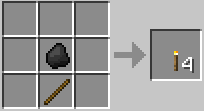
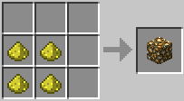

Crafteos

Crafteo de madera
La madera tiene muchos usos, construccion, creacion de objetos etc.

Crafteo de horno
El horno sirve para fundir nuestros minerales en bruto.

Crafteo de barco
El barco sirve para poder desplazarse mas rapido por el oceano.

Crafteo de TNT
La TNT sirve para explotar cosas.

Crafteo de Antorcha
La antorcha sirve para iluminar lugares oscuros y para que no aparezcan animales hostiles.

Crafteo de Piedra Luminosa
La piedra luminosa es un objeto para decoracion.